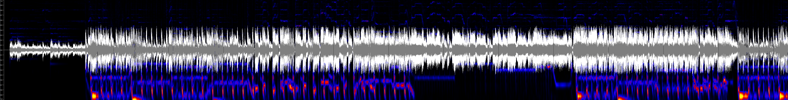

The three audio files that I have selected for this week are 'Why', 'Juno', and 'First Love' by Sabrina Carpenter:
| Metadata | Why | Juno | First Love |
|---|---|---|---|
| Title | Why | Juno | First Love |
| Artist | Sabrina Carpenter | Sabrina Carpenter | Sabrina Carpenter |
| Composer | Jonas Jeberg | John Ryan | Lost Kings |
| Copyrigh info | Hollywood | Island | Disruptor |
| Genre | Electropop | Pop | Synthpop |
| Source | YouTube | YouTube | YouTube |
| File/Audio format | MP4 | MP4 | MP4 |
| Number of channels | 2 | 2 | 2 |
| Sample rate | 44,100 Hz | 44,100 Hz | 44,100 Hz |
| Bits per second | 1,411.2 kbps | 1,411.2 kbps | 1,411.2 kbps |
| Duration | 55 Seconds | 1 minute, 11 seconds | 1 minute, 12 seconds |
The following waveforms and spectrograms were generated from the tracks:

One advanatage of time-frequency analysis over a waveform based analysis is that time-frequency will reveal how the frequency content changes over time. Where waveform lacks the efficiency of analysing more complex audios such as speech or music, time-frequency can provided detailed information. It uses analysis techniques, such as spectrograms, where color intensity shows the frequency or power. This means that multiple aspects of the audio can be analysed simultaneously. As an example, for an audio containing speech data, a spectrogram would detail elements such as harmonics where waveform could only show peaks corresponding to syllables.
Week 9 Lab Tasks